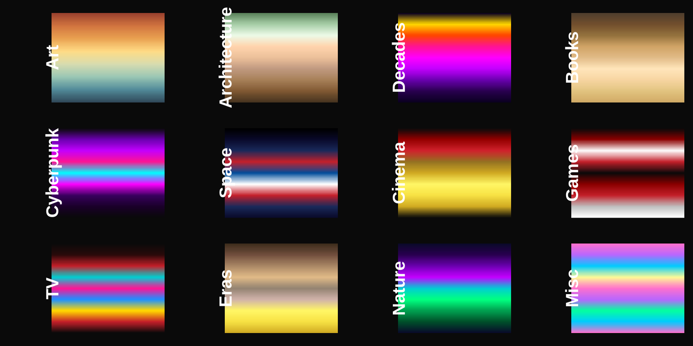
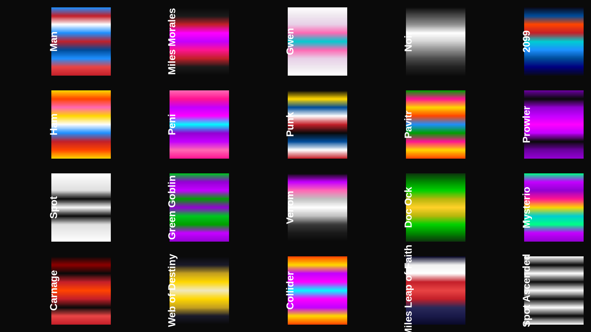
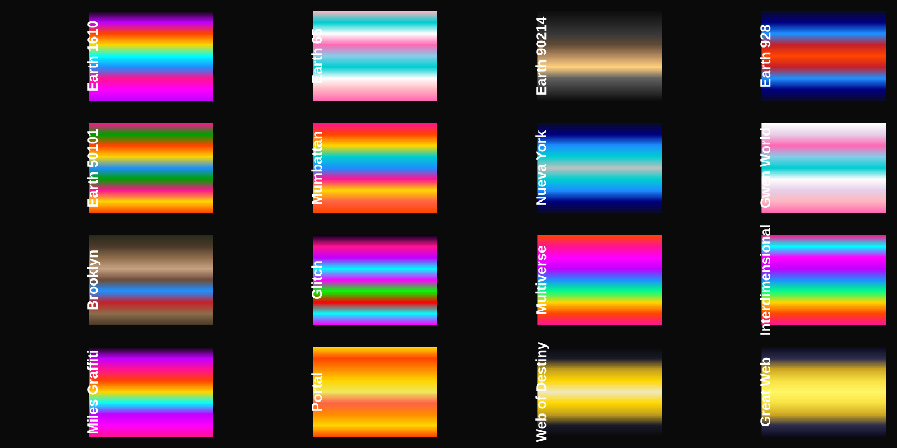
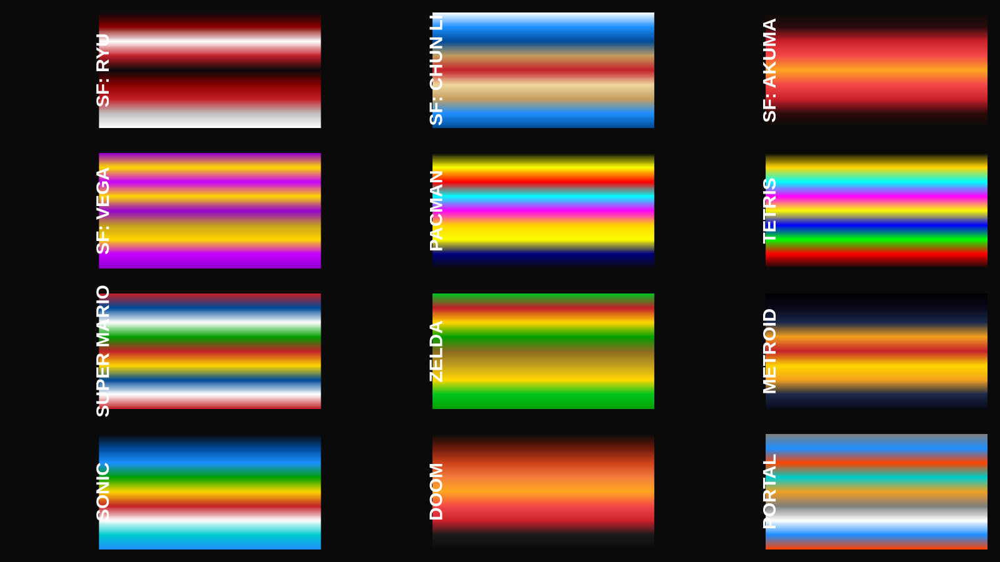
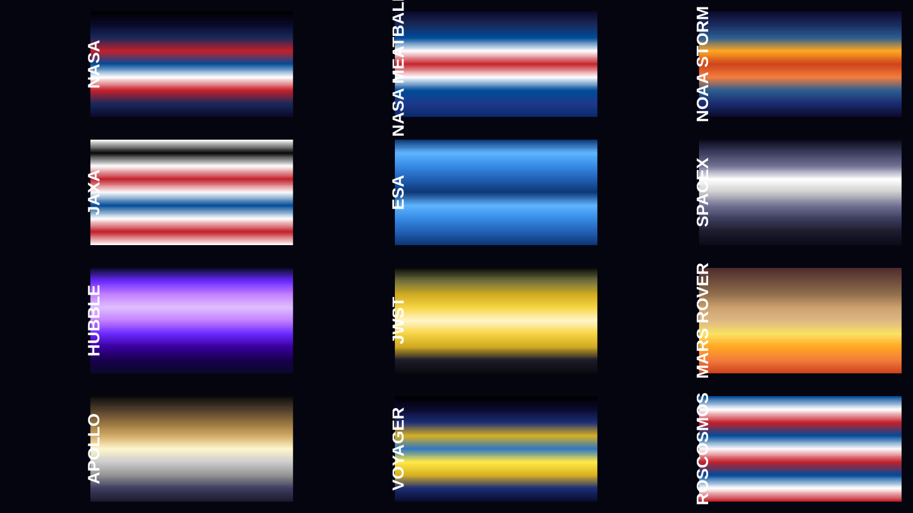
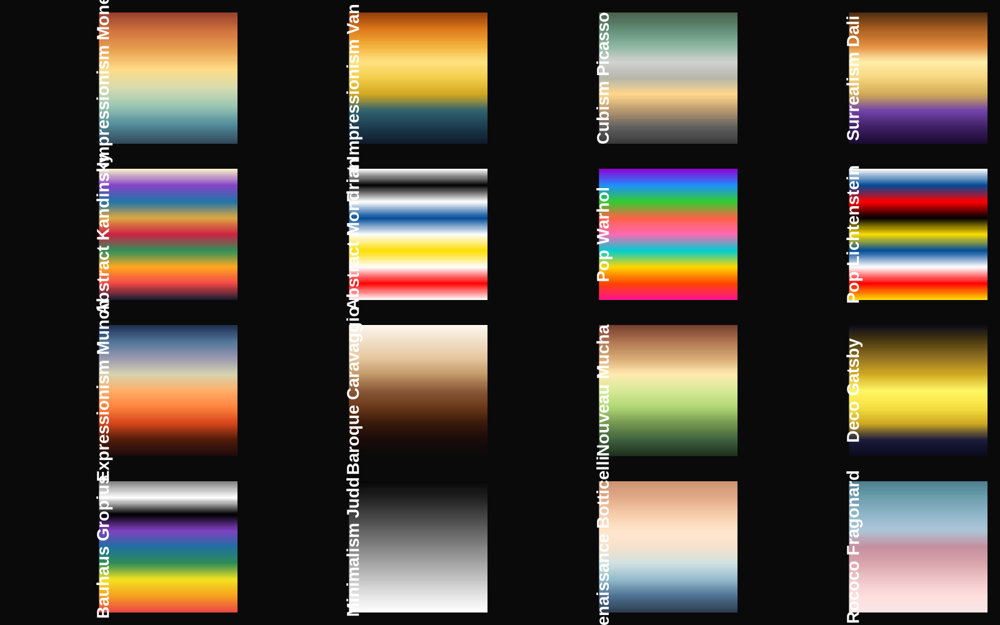
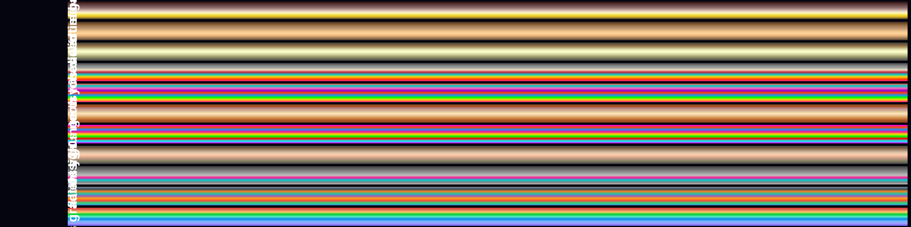

7,489 colour palettes for R — from scientific gradients to the Spider-Verse.

⚡ “When do I know I’m Spider-Man?” — “You won’t. It’s a leap of faith. That’s all it is, Miles. A leap of faith.”
cptcity brings the iconic visual energy of Into the Spider-Verse directly into R! With 7,489 colour gradients — including 63 dedicated Spider-Verse palettes — you can render maps, spatial rasters, and plots in the exact colour spectrums of Miles Morales, Earth-1610, Gwen Stacy, and the Multiverse.
What’s inside
The classic 7,140 gradients from the cpt-city archive — plus 349 curated palettes across 26 categories: art, architecture, decades, books, cyberpunk, space agencies, video games, cinema, music, anime, cities, mythology, science, Brazil, films, gemstones, weather, comics, food, albums, photography, and the entire Spider-Verse.

Four functions. That’s it.
| Function | What it does |
|---|---|
cpt(pal, n, colorRampPalette, rev, frgb) |
Returns a colour gradient — character vector or colorRampPalette function |
find_cpt(keyword) |
Searches 7288 palette names (case-insensitive) |
show_cpt(names) |
Displays palettes side-by-side as colour bars |
lucky() |
Random palette — “I’m Feeling Lucky” for colours |
library(cptcity)
# 🎧 Miles Morales "What's Up Danger" Search
find_cpt("miles") # → spider_miles_morales, spider_miles_leap_of_faith, spider_miles_graffiti
# Get Miles Morales colours
cols <- cpt("spider_miles_leap_of_faith", n = 100)
# Preview Spider-Verse palettes
show_cpt(find_cpt("spider_miles"))🕷️ Spider-Verse Spotlight — 63 Palettes. Every Dimension.

“What’s up, danger?”
The genius of Spider-Man: Into the Spider-Verse lies in its revolutionary colour language. Every dimension, every leap, and every character carries a unique visual signature.
🎧 Miles Morales & Earth-1610 Collection
| Palette | Description / Vibe |
|---|---|
spider_miles_morales |
Miles Morales — stealth black suit, neon spray crimson, electric venom strike |
spider_miles_leap_of_faith |
Leap of Faith — rising into upside-down city lights (slate, blazing red, sky blue) |
spider_miles_graffiti |
Brooklyn Street Art — spray-can magenta, electric cyan, subway tagger glow |
spider_earth_1610 |
Earth-1610 — Miles’ home dimension, halftone dots, vibrant urban comic culture |
spider_brooklyn |
Brooklyn Skyline — brownstone brick, evening purple, street lamp gold |
spider_prowler |
The Prowler (Uncle Aaron) — sinister predator purple, green claw glare, menacing shadow |
library(cptcity)
library(sf)
# 🌆 Plot map in Miles Morales "Leap of Faith" palette
nc <- st_read(system.file("shape/nc.shp", package = "sf"))
plot(nc["AREA"], pal = cpt("spider_miles_leap_of_faith", colorRampPalette = TRUE),
main = "Leap of Faith — Miles Morales Palette")
# ⚡ Electric Venom Strike matrix preview
image(matrix(1:100), col = cpt("spider_miles_morales"), main = "Spider-Miles Stealth & Spray")👤 HEROES — 14 palettes
| Palette | Character |
|---|---|
spider_miles_morales |
Miles Morales — stealth black suit & neon spray |
spider_man |
Peter Parker — classic red & blue |
spider_gwen |
Ghost-Spider — pastel watercolor & ballet teal |
spider_noir |
1930s monochrome detective |
spider_2099 |
Miguel O’Hara — cyberpunk Nueva York future |
spider_punk |
Hobie Brown — Union Jack anarchy |
spider_pavitr |
Spider-Man India — saffron & emerald |
spider_ham |
Spider-Ham — cartoon primaries |
spider_peni |
Peni Parker — mecha magenta |
spider_scarlet |
Ben Reilly — hoodie red & blue |
spider_superior |
Otto Octavius — darker, sharper |
spider_symbiote |
The black suit — sleek & alien |
spider_byte |
Margo Kess — digital avatar |
spider_1602 |
Elizabethan Spider — medieval tones |
👨👩👧 FAMILY & ALLIES — 7 palettes
| Palette | Character |
|---|---|
spider_prowler |
Aaron Davis — purple menace |
spider_prowler_earth42 |
Earth-42 Prowler — red & violet |
spider_rio_morales |
Rio Morales — warm Puerto Rican |
spider_jefferson_davis |
Jefferson Davis — police blues |
spider_aunt_may |
Aunt May — gentle earth tones |
spider_jessica_drew |
Spider-Woman — yellow & green |
spider_peter_b_parker |
Washed-up Peter — robe & regret |
spider_mayday |
Mayday Parker — baby Spider |
🦹 VILLAINS — 12 palettes
| Palette | Character |
|---|---|
spider_spot |
The Spot — white void, black dots |
spider_spot_ascended |
The Spot (full power) — reality-breaking B&W |
spider_green_goblin |
Norman Osborn — purple & green |
spider_venom |
The symbiote — black with pink tongue |
spider_carnage |
Cletus Kasady — blood red chaos |
spider_doc_ock |
Doc Ock — metallic green tentacles |
spider_kingpin |
Wilson Fisk — imposing white & black |
spider_mysterio |
Quentin Beck — illusion purple & gold |
spider_sandman |
Flint Marko — desert earth |
spider_electro |
Max Dillon — electric blue |
spider_vulture |
Adrian Toomes — deep teal |
spider_lizard |
Curt Connors — reptilian green |
spider_rhino |
Aleksei Sytsevich — grey armor |
spider_scorpion |
Mac Gargan — acid green & gold |
spider_tombstone |
Lonnie Lincoln — chalk white |
🌐 DIMENSIONS & WORLDS — 9 palettes
| Palette | World |
|---|---|
spider_earth_1610 |
Miles’ dimension — neon street art |
spider_earth_65 |
Gwen’s world — ballet pastels |
spider_earth_90214 |
Noir’s world — sepia shadows |
spider_earth_928 |
2099’s Nueva York — cyber blue |
spider_earth_50101 |
Pavitr’s Mumbattan — vibrant India |
spider_mumbattan |
The city itself — saffron heat |
spider_nueva_york |
The future skyline — electric blue |
spider_gwen_world |
Gwen’s watercolor dimension |
spider_brooklyn |
Miles’ brownstone neighborhood |
✨ COSMIC & EFFECTS — 10 palettes
| Palette | What it is |
|---|---|
spider_web_of_destiny |
The great golden web — threads of fate |
spider_great_web |
The multiverse web — radiant gold |
spider_spider_society |
Miguel’s HQ — orange & black |
spider_portal |
Interdimensional portal — blazing orange |
spider_collider |
Kingpin’s collider — purple annihilation |
spider_go_home_machine |
The Go-Home-Machine — white-hot orange |
spider_glitch |
The glitch effect — RGB static |
spider_multiverse |
Multiverse burst — every color at once |
spider_interdimensional |
Between dimensions — full spectrum |
spider_miles_graffiti |
Miles’ spray can — street art neon |
spider_miles_leap_of_faith |
“What’s up danger” — rising into light |

Every world has its own colour language. That’s the genius of the Spider-Verse films — and why these palettes exist. Earth-65 breathes in pinks and teals. Earth-90214 lives in monochrome. Earth-928 runs on cyber-blue. The Web of Destiny glows gold against infinite black.
The new v2 palettes
🎮 Games

Street Fighter, Pac-Man, Tetris, Mario, Zelda, Metroid, Sonic, Doom, Portal — arcade history in colour.
🚀 Space agencies

NASA, NOAA, JAXA, ESA, SpaceX, Roscosmos. Plus Hubble, JWST, Mars Rover, Apollo, Voyager.
🎨 Art movements

16 movements: Impressionism (Monet), Van Gogh, Cubism (Picasso), Surrealism (Dalí), Kandinsky, Mondrian, Pop Art (Warhol), Expressionism (Munch), Baroque, Art Nouveau, Art Deco, Bauhaus, Minimalism, Renaissance, Rococo.
⏳ Decades timeline

From 1920s Gatsby to 2020s gradient design. Each era’s aesthetic distilled into a colour ramp.
🌃 Works with sf and ggplot2
library(sf)
nc <- st_read(system.file("shape/nc.shp", package = "sf"))
plot(nc["AREA"], pal = cpt("spider_miles_leap_of_faith", colorRampPalette = TRUE))More categories
| Prefix | Palettes | Example |
|---|---|---|
book_ |
14 |
book_dune_arrakis, book_neuromancer, book_1984_orwell
|
cyber_ |
7 |
cyber_2077_night_city, cyber_blade_runner, cyber_matrix
|
cinema_ |
8 |
cinema_mgm_lion, cinema_technicolor, cinema_film_noir
|
arch_ |
12 |
arch_fallingwater_wright, arch_sagrada_familia_gaudi
|
tv_ |
8 |
tv_stranger_things, tv_twin_peaks, tv_x_files
|
era_ |
9 |
era_ancient_egypt, era_wild_west, era_industrial
|
nature_ |
14 |
nature_aurora_borealis, nature_coral_reef, nature_nebula
|
misc_ |
8 |
misc_vaporwave, misc_outrun, misc_steampunk
|
Installation
install.packages("cptcity") # CRAN
# or
remotes::install_github("ibarraespinosa/cptcity")
library(cptcity)
# Miles Morales Leap of Faith gradient
image(matrix(1:100), col = cpt("spider_miles_leap_of_faith"))
# Classic cpt-city palette
image(matrix(1:100), col = cpt("mpl_inferno"))Citation
citation("cptcity")Sergio Ibarra-Espinosa (2026). cptcity: incorporating the cpt-city archive into R. R package version 2.0.0. https://CRAN.R-project.org/package=cptcity
License
GPL-3 · Palettes retain their original licenses (documented in inst/extdata/).
Made with cpt(“spider_miles_morales”) · cpt-city archive · 7,489 gradients and counting · What’s Up Danger?